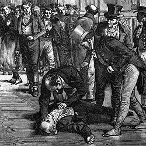
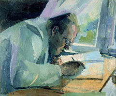
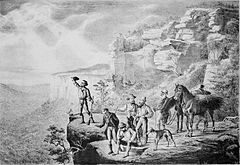

Welcome to Wikipedia
the free encyclopedia that anyone can edit. 5,148,748 articles in English
- Arts
- Biography
- Geography
- Main Page
- Contents
- Featured content
- Current events
- Random Article
- Donate to Wikipedia
From today's featured article
On 11 May 1812, Spencer Perceval, Prime Minister of the United Kingdom of Great Britain and Ireland, was shot and killed in the lobby of the House of Commons in London. His assailant, John Bellingham, a Liverpool merchant, was tried and convicted, and on 18 May was hanged at Newgate Prison. Despite initial fears that the assassination might be linked to a general uprising, Bellingham had in fact acted alone, as a protest against the government's failure to compensate him for his imprisonment in Russia for a trading debt. After Perceval's death, parliament made generous provision to his widow and children, but his ministry was soon forgotten and his policies reversed. He had led the Tory government during a critical phase of the Napoleonic Wars, and his determination to prosecute the war using the harshest of measures had caused widespread poverty and unrest. He is generally better known for the manner of his death than for any of his achievements. Later historians have characterised Bellingham's hasty trial and execution as contrary to the principles of justice. (Full article...)
In the news
Werner Faymann (pictured) resigns as Chancellor of Austria and leader of the Social Democratic Party. In horse racing, Nyquist, ridden by Mario Gutierrez, wins the Kentucky Derby. Enda Kenny of Fine Gael is re-elected Taoiseach of Ireland and forms a minority coalition government. A wildfire in Canada displaces 88,000 people and destroys more than 2,400 buildings in Fort McMurray, Alberta. In association football, Leicester City win the English Premier League for the first time. Mark Selby defeats Ding Junhui to win the World Snooker Championship.
Did you know...
.. that among the late works by Max Reger (pictured) are a fragment of a Latin Requiem and the Hebbel Requiem? ... that Narjis converted to Islam on the request of Mary, the mother of Jesus, and Fatimah, the daughter of Muhammad, whom she saw in her dreams? ... that Antonia and William Kennedy Dickson's History of the Kinetograph, Kinetoscope, and Kinetophonograph is considered the first book on the history of film? ... that Iranian para-archer Zahra Nemati has qualified for both the 2016 Summer Paralympics and the 2016 Summer Olympics? ... that the Swedish immigrants who built Larson's Hunters Resort on the western border of Minnesota initially lived in a dugout? ... that the Bosnian prince Vladislav was passed over in succession for unknown reasons, but nevertheless ruled with his wife Jelena in the name of their minor son Tvrtko? ... that the British Institute in Amman was founded by the archaeologist Crystal Bennett in 1975 to provide a base for British archaeological expeditions to Jordan? ... that Busker Busker's "Cherry Blossom Ending" re-enters the South Korean music charts every spring and is nicknamed "Cherry Blosso
On this day...
868 – A copy of the Diamond Sutra was printed in China, making it the world's oldest dated printed book. 1745 – War of the Austrian Succession: French forces defeated the Anglo-Dutch-Hanoverian "Pragmatic Army" at the Battle of Fontenoy in the Austrian Netherlands in present-day Belgium. 1813 – William Lawson, Gregory Blaxland and William Wentworth departed westward from Sydney on an expedition (pictured) to become the first Europeans confirmed to cross the Blue Mountains. 1946 – The United Malays National Organisation, today Malaysia's largest political party, was founded, originally to oppose the constitutional framework of the Malayan Union. 1996 – A severe blizzard on Mount Everest caused the deaths of eight climbers, contributing to that year becoming the deadliest in the mountain's history at the time.